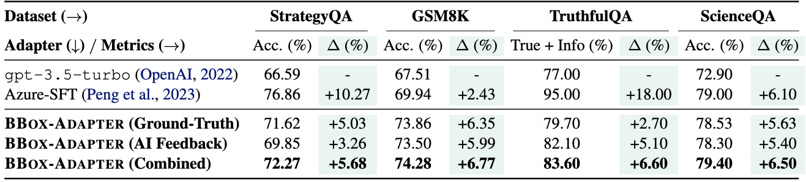
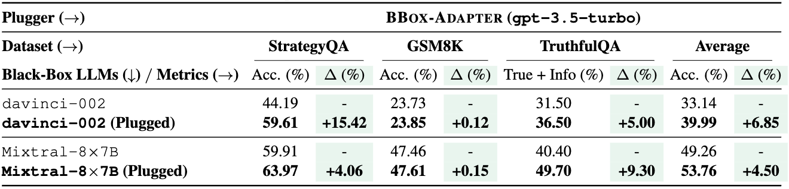
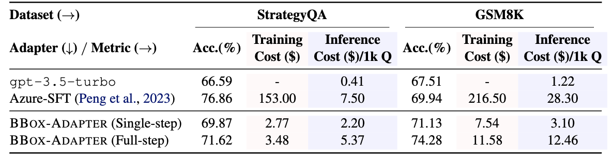

Introduction
Adapting black-box LLMs through fine-tuning APIs has several critical issues on
transparency,
privacy, and
cost. The adaptation of black-box LLMs without the use of APIs remains an unresolved challenge.
Due to the black-box nature, users are unable to access
- internal model parameters,
- high-dimensional representations of input sequences or output generations, and
- output token probabilities for their specific use cases in black-box adaptation.
Notably, existing methods, except ours, fail to support black-box LLM adaptations, where neither model parameters nor output probabilities can be accessed in most recent LLMs like GPT-3.5 and Gemini. BBox-Adapter adopts an online adaptation framework, iteratively sampling from previous inferences and updating the adapter.

Experiments
We evaluate BBox-Adapter on four distinct question-answering tasks, requiring model adaptation on mathematical (GSM8K), implicit-reasoning (StrategyQA), truthful (TruthfulQA), and scientific (ScienceQA) domains.
Main Results

BBox-Adapter consistently outperforms gpt-3.5-turbo by an average of 6.39% across all datasets, highlighting its efficacy in adapting black-box LLMs to specific tasks.
Notably, BBox-Adapter (AI Feedback) demonstrates competitive performance compared to BBox-Adapter (Ground-Truth), which demonstrates its robust generalization capability across datasets, even in the absence of ground-truth answers.
Furthermore, BBox-Adapter (Combined) achieves the highest performance among the three variations.
This enhanced performance can be attributed to the combination of high-quality initial positive sets derived from ground-truth solutions and the dynamic updating of positive sets through AI feedback, leading to the continuous self-improvement of BBox-Adapter.
Plug-and-Play

The tuned BBox-Adapter can be seamlessly applied to various black-box LLMs in a plug-and-play manner, eliminating the need for retraining or additional technical modifications. Compared to their unadapted black-box LLMs, davinci-002 and Mixtral-8x7B, our trained adapter demonstrates an average performance improvement of 6.85% and 4.50% across all three datasets, respectively.
The effectiveness of BBox-Adapter in plug-and-play scenarios arises from its independence from the internal parameters of black-box LLMs.
Costs

Compared with the base model, Azure-SFT boosts accuracy by an average of 6.35% at the expense of significantly higher costs.
BBox-Adapter, in single-step inference variant, brings 3.45% performance gain compared with the base model, with 41.97 times less training cost and 6.27 times less inference cost than SFT.
Meanwhile, its full-step inference variant achieves 5.90% improvement over the base model with 31.30 times less training cost and 1.84 times less inference cost.
This increased cost in its full-step variant is attributed to the integration of a beam search in the adapted inference, which requires the use of the black-box LLM APIs to generate multiple solution paths for selection.
Case Study
Here is a case study of BBox-Adapter on GSM8K. For the given question, the CoT solution from original gpt-3.5-turbo is incorrect, while the model adapted using BBox-Adapter successfully executed a logical, step-by-step search, ultimately yielding the correct answer. For clarity, we display only the top-3 candidate answers at each step.